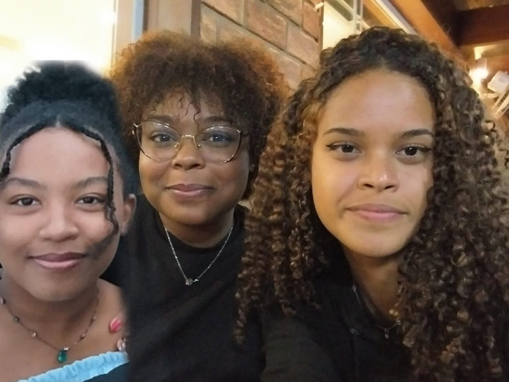
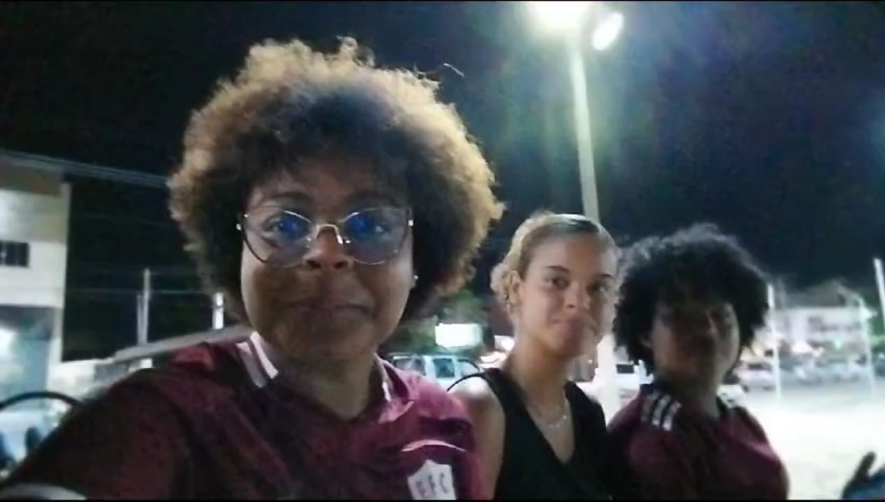

O fascinante grupo das "amigas do peito"! Unidas como nunca, separadas como sempre. Quando estão longe, as mensagens no grupo são cheias de emojis fofos, corações e promessas de um próximo encontro que nunca acontecerá. Mas, quando finalmente estão juntas, é uma sinfonia de abraços exagerados e sorrisos dignos de um comercial de pasta de dente.
 A disputa pelo coração da Merena Cacheada foi acirrada, mas quem realmente levou a melhor foi o Mateus
Machado. Usando sua estratégia infalível, ele não só conquistou o tão sonhado lugar na "família da Merena",
mas deu um passo além: pegou a irmã dela! Agora, enquanto ele brilha no centro das atenções, o Ian, que
parecia ser o favorito, acabou sendo posto de escanteio. Seu "jeito", de tentar conquistar com memes e
frases de efeito, não foi suficiente para vencer o poder de um bom romance de família.
Mas o mais
irônico de tudo é que, ao invés de focar na Merena, Mateus mostrou que, na verdade, o prêmio nunca foi o
coração dela, mas a entrada na galera mais descolada. E agora, o Ian, amargurado e em silêncio, se contenta
em observar, com a cara de quem ainda não entendeu que, às vezes, ser o melhor amigo do peito não é o
suficiente para entrar para a "família".
Driei e Mateus Machado são a definição perfeita de “amizade forçada”. Eles se odeiam tanto quanto se amam,
mas, ao contrário do que todos pensam, sabem exatamente como manter as aparências quando estão na mesma
sala. Entre olhares de desconfiança e provocações sutis, conseguem sustentar a farsa de serem "amigos de
longa data", quando, na verdade, mal conseguem se olhar sem uma piada sarcástica ou uma alfinetada
disfarçada. A relação deles é como um jogo de xadrez, só que o rei e a rainha são eles mesmos, sempre
prontos para dar o golpe de mestre.
No entanto, há algo que nunca pode faltar: o aperto de mão. Esse
gesto, mais do que uma formalidade, é o momento em que todo o ódio não-ditado se dissolve. É o momento de
"grandeza", onde ambos, com um sorriso falso, trocam um aperto de mão como se fossem os melhores amigos do
mundo.